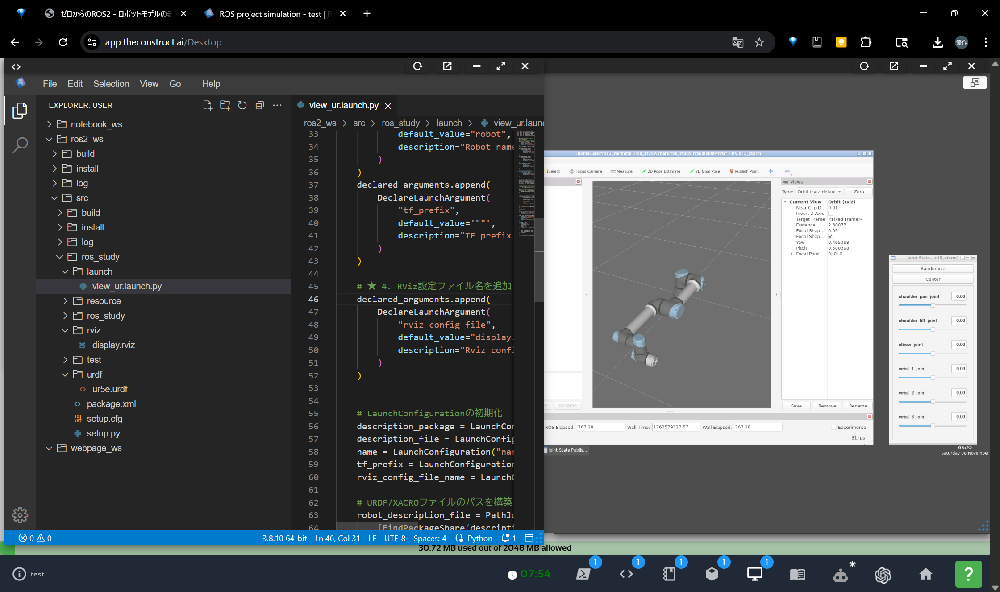

ゼロからのROS2
ロボットモデルの表示
大阪大学 中島優作
本スライドのゴール
※本スライドではros2 humbleを使います
Rvizとは？

同梱workspaceの利用
cd ~/zero_ros/ros2_ws
colcon build --symlink-install
source install/setup.bash
- このリポジトリには
ros2_wsが同梱されており、ROS2 サンプルはすでに package 化されています - 以降のコード例は
ros2_ws/src/ros_studyを canonical source として参照してください
URのパッケージを取得
- ここではユニバーサルロボット(UR)を扱います
- URのパッケージ詳細→ Universal_Robots_ROS2_Driver
- ※The Constructを使っている人は環境立ち上げの度にインストールが必要なので注意
# キーが期限切れの場合があるので念のため更新します
curl -s https://raw.githubusercontent.com/ros/rosdistro/master/ros.asc | sudo apt-key add -
sudo apt update
# ユニバーサルロボットのROSパッケージをインストールします
sudo apt install ros-${ROS_DISTRO}-ur
# ユニバーサルロボットのROSパッケージの動作確認
ros2 launch ur_description view_ur.launch.py ur_type:=ur5e
まずはURDFを追記
Ur5eの例
launchを作成
CMakeLists.txtを修正
ファイルの配置の確認

ros2_ws/src/ros_study に同等の配置になっていればOKです
ビルドと実行
- ビルドします
cd ~/zero_ros/ros2_ws
colcon build --symlink-install
source install/setup.bash
ros2 launch ros_study view_ur.launch.py
このような画面になればok
↓ならない場合は
表示されない時のRvizの設定

↑ RVizの設定例
↓Rvizの設定を保存する場合
rviz設定ファイルの保存
ロボットモデルを表示するまでの流れ
- ステップ1：URDFでロボットモデルを書く
- ステップ2：URDFを読み込ませて表示
ロボットモデル表示の全体像
ステップ1-1：ロボットの構造を記述するURDFとは
ロボットアームの構造

- ジョイント(関節):
モーターが動く部分 - リンク:
ジョイントを繋ぐ部分 - エンドエフェクタ(手先効果器):
作業をする手先
この構造をファイルに落とし込んだのがURDF↓
URDF（Unified Robot Description Format）
Ur5eの例
URDF（Unified Robot Description Format）
Ur5eのVS Codeで折りたたんだ表示
XACRO（XML Macros for Robots）
エンドエフェクタを追加
変更後のxacroを呼び出すLaunch
ビルドと実行
- ビルドします
cd ~/zero_ros/ros2_ws
colcon build --symlink-install
source install/setup.bash
ros2 launch ros_study view_ur_with_ee.launch.py
ステップ1-2：URDFの中身
UR5eの例
リンク名
| 名前 | 説明 |
|---|---|
| world | シミュレータの座標系 |
| base | URコントローラの座標系 |
| base_link | ロボットの基部 |
| shoulder_link | 肩のリンク |
| upper_arm_link | 上腕のリンク |
| forearm_link | 前腕のリンク |
| wrist_1_link | 手首1のリンク |
| wrist_2_link | 手首2のリンク |
| wrist_3_link | 手首3のリンク |
| tool0 | URコントローラのデフォルトツール座標系 |
| ee_link | エンドエフェクタのリンク |
ジョイント名
| 名前 | 説明 |
|---|---|
| world_joint | worldとbase_link間のジョイント |
| shoulder_pan_joint | 1軸ジョイント |
| shoulder_lift_joint | 2軸ジョイント |
| elbow_joint | 3軸ジョイント |
| wrist_1_joint | 4軸ジョイント |
| wrist_2_joint | 5軸ジョイント |
| wrist_3_joint | 6軸ジョイント |
| ee_fixed_joint | エンドエフェクタ固定ジョイント |
| base_link-base_fixed_joint | base_linkとbase間の固定ジョイント |
| wrist_3_link-tool0_fixed_joint | wrist_3_linkとtool0間の固定ジョイント |
ROSでよく使うリンク名
~慣習~
| リンク名 | 説明 |
|---|---|
| base_link | ROSのベース座標系 |
| world | Gazebo等のシミュレータのワールド座標系 |
| ee_link | エンドエフェクタのリンク |
ROSでよく使うリンク名
~ROS-industrial標準リンク~
産業用ロボットとの互換性を持たせるために決められている
| リンク名 | 説明 |
|---|---|
| base | 産業用コントローラのベース座標系 |
| tool0 | 産業用コントローラのデフォルトツール座標系 |
| flange | エンドエフェクタ取り付け用フレーム（REP 103準拠、x+が前方） |
ジョイントの要素
~type(動作の種類)~
| 要素 | 例 |
|---|---|
| revolute: 回転関節（角度制限あり） | ロボットアーム |
| continuous: 連続回転関節（角度制限なし） | タイヤ |
| prismatic: 直動関節 | - |
| fixed: 固定関節 | 手先に固定したエンドエフェクタ |
ロボットアームではrevoluteとfixedしか使わない
ジョイントの要素
~リンクとのつながりと制限~
| 要素 | 説明 |
|---|---|
| parent/child | 親リンクと子リンクの指定 |
| origin | 親リンクからの位置・姿勢 |
| axis | 回転軸の方向ベクトル |
| limit | 動作範囲、トルク、速度の制限 |
リンクの要素
~visual(表示用)~
シミュレータで必要な項目、今は飛ばしてok
| 要素 | 説明 |
|---|---|
| geometry | 形状（box, cylinder, sphere, mesh）。CADデータはdaeやstl形式で表示することが多いです。 |
| material | 色・材質 |
| origin | リンク座標系からの位置・姿勢 |
リンクの要素
~collision(干渉計算用)~
MoveItの避けるモーション生成等で使います
| Collisionに関する注意点 |
|---|
| ・干渉計算は重い！モーションプランニング計算量の半分以上は干渉計算 |
| ・通常はvisualのgeometryをmeshにして、collisionは円柱などを使用し計算量を削減することが多い |
| ・collisionを設定していない場合はvisualのgeometryがcollisionとして自動で適用されます |
ジョイントの物理属性
※物理シミュレータを使わないなら記述不要
| 要素 (Dynamics) | 説明 |
|---|---|
| friction | 静摩擦[N or N/m] |
| damping | 減衰値[Ns/m or Nms/rad] |
リンクの物理属性
※物理シミュレータを使わないなら記述不要
| 要素 (Inertial) | 説明 |
|---|---|
| mass | 質量 |
| ixx, iyy, izz | 主軸周りの慣性モーメント |
| ixy, ixz, iyz | 慣性乗積（通常は0） |
※CADソフトの計算値や実測値を使う
リンク間相互作用
※物理シミュレータを使わないなら記述不要
| 要素 (Contact Coeffs) | 説明 |
|---|---|
| mu | 摩擦係数 |
| kp | 剛性係数 |
| kd | 減衰係数 |
ステップ2：URDFからRVizで表示するLaunchファイル
URDFからRVizまでの流れ
launchファイルとの対応
データの流れを目視確認
- GUIを動かすと、裏でどのようなデータが流れているか確認しましょう。
- 新しいターミナルを開いて以下のコマンドを実行します。
▼ コマンド
# トピックの中身をリアルタイム表示
ros2 topic echo /joint_states
↓ 次のスライドで変化する値を確認しましょう
データの流れを目視確認 (続き)
↓ GUIのスライダーを動かすと
position の値が変化します
header:
stamp: {sec: 169..., nanosec: ...}
frame_id: ''
name:
- shoulder_pan_joint
- shoulder_lift_joint
...
position: [0.0, -1.57, 0.0, ...]
# ↑ ここの数字が変わる！
velocity: []
effort: []
stamp: {sec: 169..., nanosec: ...}
frame_id: ''
name:
- shoulder_pan_joint
- shoulder_lift_joint
...
position: [0.0, -1.57, 0.0, ...]
# ↑ ここの数字が変わる！
velocity: []
effort: []
なぜTFが必要？
- URDFだけでは「形状」と「関節がどう繋がっているか」しか分かりません。
- 「各関節が何度曲がった結果、手先がどこにあるか」というリアルタイムの位置・姿勢情報、それがTFです。
- RvizはURDF（形）とTF（位置）を組み合わせて初めてモデルを表示できます。
TFの役割1：座標変換 (ツリー構造)

- TF (Transform) は、ロボットの各パーツ（Link）の相対的な位置関係をツリー構造で管理します。
-
そして、
robot_state_publisherノードが、URDFを読み込み、このTFツリーを計算して配信する張本人です。
モデル表示のデータの流れ
ノードの接続関係を見る (rqt_graph)
設計図通りに通信がつながっているか確認できます
# ノードグラフを表示するコマンド
rqt_graph
Rvizでの重要設定：Fixed Frame
- Rvizでモデルを表示するには「どのリンクを座標の基準にするか」を指定する必要がある
- これが左側の設定パネルにある Fixed Frame で、通常は
base_linkやworldを指定します。
TFの役割2：座標管理（時間）
- TFは「いつの時点」の座標かというタイムスタンプ情報も管理しています。
- これは複数のセンサやPCが連携する複雑なシステムで重要になります。
-
今回のパートで気にする必要はありません。
（詳細はros-arm-position-controlスライドで解説）
ロボットモデルの数式表現
- ロボットの構造を行列で表現する方法としてDHパラメータがあります
- URDFで読み込んだロボットの制御の裏ではDHパラメータを使って計算しています
DHパラメータとは？↓
DHパラメータとは？
※厳密には修正DHパラメータです
うまくいかない時は？
(トラブルシューティング)
↓
Q. ロボットが表示されない
A. Fixed Frameを確認
- RViz左側のパネルを確認
- 「Global Options」→「Fixed Frame」
- ここが
base_linkまたはworldになっているか確認してください。
Q. "No transform..." エラー
A. Publisherの確認
robot_state_publisherノードは起動していますか？- このノードがTF（位置情報）を配信していないとエラーになります。
Q. ファイルの更新が反映されない
A. ビルドキャッシュをクリア
- `ros2_ws`ディレクトリで以下のコマンドを実行してください:
rm -rf build/ install/ log/- その後、再度`colcon build`を実行してください。